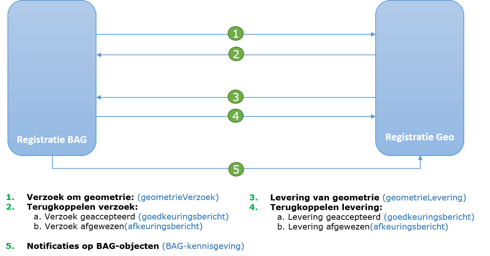
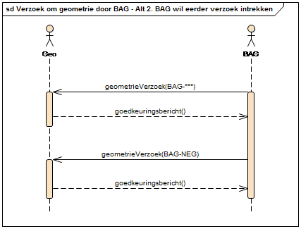
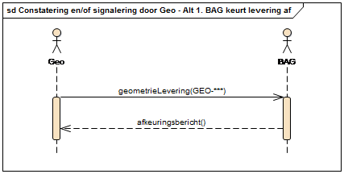

Creative Commons Attribution 4.0 International Public License (CC-BY)
Abstract
Deze standaard beschrijft de uitwisseling van BGT|IMGeo gegevens tussen een Geo en BAG-afdeling in een organisatie (gemeente). Dit document beschrijft het Geo-BAG berichtenverkeer en de StUF-Geo BAG berichten in dit berichtenverkeer Op deze twee documenten is de technische implementatie in de vorm van berichtenschema’s (XSD’s) en servicebeschrijvingen (WSDL’s) gebaseerd. De inhoud van de berichten wordt bepaald door de BAG berichtencatalogus en RSGB.
Status of This Document
This section describes the status of this document at the time of its publication. Other documents may supersede this document. A list of current Geonovum publications and the latest revision of this document can be found via https://www.geonovum.nl/geo-standaarden/alle-standaarden(in Dutch).
Dit is de definitieve versie van de standaard. Wijzigingen naar aanleiding van consultaties zijn doorgevoerd.
1. Inleiding
Dit hoofdstuk geeft een inleiding op het StUF-Geo BAG berichtenverkeer.
1.1 Waarom dit koppelvlak?
Voor het automatisch uitwisselen van gegevens tussen twee afdelingen binnen de organisatie zijn afspraken nodig welke worden vastgelegd in een koppelvlak-specificatie. Een koppelvlak is een interface die volgens een bepaalde standaard de uitwisseling van gegevens tussen informatiesystemen verzorgt. Een koppelvlak werkt met standaarden. Het aanleverende systeem is verantwoordelijk voor de vertaling van gegevens naar die standaard en het afnemende systeem zorgt voor omzetting naar haar eigen ‘taal’.
Dit koppelvlak beschrijft de gegevensuitwisseling tussen het registratiesysteem BAG en het registratiesysteem Geo binnen een gemeente. In het registratiesysteem BAG worden gebouw- en adresgegevens bijgehouden in het kader van de wet Basisregistraties Adressen en Gebouwen (BAG). In het registratiesysteem Geo worden de geometrie en attribuutgegevens van topografische objecten bijgehouden in het kader van de Basisregistratie Grootschalige Topografie (BGT) en ten behoeve van intern gebruik (o.a. beheer openbare ruimte). Voor het registratiesysteem Geo wordt ook geometrie van objecten in het registratiesysteem BAG ingewonnen en bijgehouden.
Om er voor te zorgen dat de registratiesystemen BAG en Geo, en de basisregistraties BAG en BGT onderling consistent zijn, is een koppeling op basis van een standaard van groot belang. Het werkingsgebied van dit koppelvlak is dan ook primair bedoeld voor optimalisatie van gegevensuitwisseling en het beheer van twee wettelijke backoffice processen voor BAG en BGT. Als aanvulling hierop zijn voor aansluiting bij de bredere gemeentelijke behoefte optionele objecttypen uit RSGB toegevoegd, zodat de inwinning van de geometrie van deze objecttypen meegenomen kunnen worden in de bijhouding van de BAG en BGT objecttypen.
De voordelen van deze koppelvlakstandaard zijn o.a. dat
in een specifiek applicatielandschap verschillende BAG-applicaties met verschillende BGT-applicaties kunnen koppelen (via een gegevensdistributiecomponent).
een geautomatiseerde koppeling voorkomt, ook op de plaats waar het maar door één persoon wordt uitgevoerd, overtikwerk en fouten in de administratie.
het de onderlinge consistentie en de kwaliteit van de gegevens in de twee administraties vergroot wat tot betere informatievoorziening bij besluiten en fraudedetectie leidt.
het zorgt voor een helder inzicht in de werkvoorraad aan beide zijden en de stroomlijning van de processen: zaken kunnen niet meer onzichtbaar lang blijven liggen; geometrie wordt niet vaker dan noodzakelijk ingemeten.
1.2 Leeswijzer
Dit document beschrijft het berichtenverkeer tussen het registratiesysteem BAG en het registratiesysteem Geo (hierna respectievelijk BAG en Geo). Deze koppelvlakspecificatie beschrijft de uitwisseling van geometrie voor BAG-objecten, waarbij BAG de partij is die een verzoek doet om geometrie en Geo de partij is die geometrie levert. BAG houdt Geo verder op de hoogte van wijzigingen (o.a. status en attribuutgegevens) op de BAG-objecten via notificaties (BAG-kennisgevingen) (zie Figuur 1).

Figuur 1.1 Schematische weergave componenten StUF-Geo BAG berichtenverkeer.
De standaard van berichten waarmee de gegevens tussen BAG en Geo worden uitgewisseld is gebaseerd op het Standaard Uitwiselings Formaat (StUF). Naast bestaande berichten uit StUF 03.10 en de BAG-berichtencatalogus (als onderdeel van StUF-BG) worden voor dit koppelvlak specifieke berichten toepast, aangeduid met StUF-Geo BAG berichten. Dit koppelvlak is als apart sectormodel (geoBAG) gepositioneerd naast de BAG berichtencatalogus.
De structuur van dit document is als volgt: o.b.v. een aantal uitgangspunten o.a. verantwoordelijkheden en taken in Hoofdstuk 2 worden een drietal algemene scenario’s van de werkprocessen tussen BAG en Geo geschetst in Hoofdstuk 3. In deze scenario’s worden bepaalde berichten zoals verzoeken en leveringen verstuurd. De inhoud van de berichten zijn nader gedefinieerd in Hoofdstuk 4 en Hoofdstuk 5.
1.3 Verbinding met de GEMMA Informatiearchitectuur
De GEMMA Informatiearchitectuur[1] geeft inrichting aan de informatiehuishouding van gemeenten. De informatiehuishouding betreft de referentiecomponenten en applicatiefunctionaliteit waarmee de gegevens kunnen worden opgeslagen, geraadpleegd en processen kunnen worden ondersteund etc. Ook de informatiemodellen (RSGB, RGBZ, ImZTC, etc.) en berichtenstandaarden (StUF, StUF-BG, StUF-ZKN, etc.) die zorgen voor een efficiënte en gestandaardiseerde manier van informatie-uitwisseling, zijn onderdeel van de informatiearchitectuur.
Figuur 2 geeft een overzicht van de GEMMA Referentiecomponenten[2] in gedeeld op beleidsthema’s zoals Milieu & Mobiliteit en Ruimtelijke Ordening & Wonen. De referentiecomponenten die relevant zijn voor het geoBAG-koppelvlak zijn omcirkeld in rood. In onderstaande tabel wordt een vertaling gegeven tussen de naamgeving van de referentiecomponenten in dit koppelvlak en GEMMA.
Figuur 1.2: Gemma Referentiecomponenten
Geonovum
GEMMA
Registratie BAG
BAG-administratie
Registratie GEO
BGT-administratie
Registratie GEO
GIS (Geografisch Informatie Systeem)
Registratie GEO
CAD (Computer-Aided Design)
De GEMMA Softwarecatalogus[3] is een online informatiesysteem dat het (verwachte) softwareaanbod voor gemeenten en het gebruik door gemeenten in kaart brengt. Deze catalogus is gebaseerd op de naamgeving en structuur van de GEMMA Referentiecomponenten. Met de bovenstaande mapping zijn software leveranciers instaat om de geoBAG-koppeling op de juiste manier in te voeren in de software catalogus.
Deze koppelvlakspecificatie voor het Geo-BAG berichtenverkeer is gebaseerd op de volgende standaarden:
Afkorting
Document
Versie
Datum
Auteur c.q. beheerder
[BGT]
Gegevenscatalogus BGT
1.1.1
Juli 2013
Geonovum
[IMGeo]
Gegevenscatalogus IMGeo
2.1.1
Juli 2013
Geonovum
[BAG-P]
BAG processenhandboek
2013
11 februari 2014
Kadaster
[StUF]
StUF 03.01: In Gebruik
22
1 juli 2015
KING
Deze koppelvlakspecificatie voor het Geo-BAG berichtenverkeer hanteert verder de volgende documenten en bestanden die toegepast dienen te worden bij de implementatie:
Dit hoofdstuk beschrijft de uitgangspunten voor uitwisseling van gegevens tussen
BAG en Geo via StUF-Geo BAG berichtenverkeer.
2.1 Actoren en verantwoordelijkheden: Geo en BAG
Het StUF-Geo BAG berichtenverkeer kent twee actoren[^4}: (het
registratiesysteem[^5] van) BAG en (het registratiesysteem van) Geo, hierna
respectievelijk BAG en Geo.
BAG is eindverantwoordelijk voor de volledigheid van de BAG-objecten, het op een
correcte manier afbakenen van BAG-objecten en de vastlegging en distributie van
de juiste BAG-gegevens volgens de hiervoor geldende wettelijke eisen.
Geo is veelal faciliterend voor de geometrische inwinning en vastlegging van de
geometrie van BAG-objecten conform de eisen van de BAG. Voorts is Geo
verantwoordelijk voor de afstemming van de BGT met de BAG.
De beheerder van Geo[^6] kan vanuit BAG gemandateerd zijn voor de vaststelling
van de definitieve geometrie van BAG-panden en BAG-verblijfsobjecten. Het
brondocument voor de geometrische mutaties voor BAG-objecten kan en mag
opgemaakt en ondertekend worden door de beheerder van Geo.
[^4] In het geval dat BAG zelf de inwinning en vastlegging van de geometrie
verzorgt, is een deel van het in dit koppelvlak beschreven berichtenverkeer niet
van toepassing. Geo heeft dan voldoende aan de kennisgevingsberichten vanuit BAG
voor de bijhouding van de gegevens van BGT objecten. [^5] Registratiesysteem
wordt hierna “applicatie” genoemd. [^6] In praktijk zijn dit de medewerkers van
Geo, danwel de ambtenaar die belast is me de uitbesteding van inwinning van de
geometrie voor Geo.
2.1.1 Berichten
Het berichtenverkeer tussen Geo en BAG maakt gebruik van de volgende typen
berichten:
StUF-Geo BAG berichten: specifiek voor dit koppelvlak gedefinieerde
dienstberichten t.w.
geometrieVerzoek (gmvDi01): een asynchroon inkomend vrij bericht als verzoek
tot levering van geometrie[^7] voor een bepaald object.
geometrieLevering (gmlDi01): een asynchroon inkomend vrij bericht met de te
leveren geometrie[^7] voor een bepaald object.
goedkeuringsbericht (bevestigingDu01): een asynchroon responsbericht met de
goedkeuring van (een deel van de inhoud van) een geometrieVerzoek of
geometrieLevering.
afkeuringsbericht (foutDu01): een asynchroon responsbericht met een
afkeuring van (een deel van de inhoud van) een geometrieVerzoek of
geometrieLevering.
StUF-BG / BAG-kennisgevingsberichten
Logistieke StUF bevestigings- en foutberichten, o.a.
Bv03[^8]: een bevestigingsbericht als technische synchrone respons op een
asynchroon bericht waarbij het bericht op basis van berichtstuurgegevens
verwerkbaar wordt geacht[^9]
Fo03: een foutbericht als technische synchrone respons op een asynchroon
bericht waarbij het bericht niet verwerkbaar wordt geacht.
[^7] Naast geometrie worden ook enkele administratieve gegevens uitgewisseld;
zie H4 Berichten.
[^8] Of Bv04: een servicebus stuurt een Bv04 als technisch synchrone respons op
een asynchroon bericht
[^9] Een technische synchrone respons wordt op elk samengesteld of
kennisgevingsbericht teruggeven cf. StUF conventies, en is dan ook verder niet
opgenomen in de uitwerking van het berichtenverkeer.
De StUF-Geo BAG berichten zijn gespecifieerd in §4.1.
2.1.2 Uitwisselen van gegevens van BAG-objecten
In het StUF-Geo BAG berichtenverkeer worden gegevens uitgewisseld van
BAG-objecten.
2.1.2.1 Objecttypen
De volgende BAG-objecttypen worden ondersteund in het Geo-BAG berichtenverkeer:
* Pand * Verblijfsobject * Stand-/ligplaats * Woonplaats *
Nummeraanduiding[^10] * OpenbareRuimte[^11]
Dit berichtschema’s van van het Geo-BAG koppelvlak zijn daarnaast uitgebreid met
de optionele objecttypen OverigGebouwdObject en OverigTerrein voor aansluiting
met RSGB. Overig optionele BAG+-objecttypen worden in het Geo-BAG
berichtenverkeer niet ondersteund. In de StUF-Geo BAG berichten worden alleen de
gegevens opgenomen die noodzakelijk zijn voor een goede verwerking van dit
bericht door de ontvanger (zie gegevensmodel in Bijlage 3.).
[^10] Alleen in BAG-kennisgeving, niet in geometrieVerzoek of
geometrieLevering.
[^11] Alleen in BAG-kennisgeving, niet in geometrieVerzoek of
geometrieLevering.
2.1.2.2 Geometrie
Voor dit koppelvlak geldt dat de geometrie conform de inwinningsregels ten
aanzien van nauwkeurigheid en inwinningswijze van de BAG wordt opgenomen. Een
BAG-object kan een vlak- of puntgeometrie hebben.
De verplichte geometrie voor een Pand in de BAG is een vlakgeometrie in
bovenaanzicht. In het kader van de BGT is Geo ook verantwoordelijk voor de
geometrische inwinning van grootschalige topografie. Voor de BGT is de keuze
gemaakt om van een pand de geometrie op maaiveldniveau op te nemen. Door
modernere bouwvormen komt het daarbij steeds vaker voor dat de geometrie van een
pand op maaiveldniveau aanzienlijk kan afwijken van de geometrie van een pand op
een ander niveau. De geometrie op maaiveld van een Pand kan in de StUF-BG
kennisgevingsberichten als optionele geometrie bij dit object worden opgenomen
naast de verplichte geometrie van bovenaanzicht.
In dit koppelvlak wordt in de StUF-Geo BAG dienstberichten[^12] de
geometrie van objecten als volgt opgenomen: objecttype Verblijfsobject wordt
uitgewisseld met puntgeometrie, en optioneel met vlakgeometrie.
objecttype Pand wordt uitgewisseld met geometrie van het bovenaanzicht, en
optioneel met geometrie op het maaiveld.
alle overige objecttypen[^13] in §2.3.1. met vlakgeometrie.
[^12] Dus niet van toepassing voor de StUF-BG kennisgevingsberichten.
[^13] M.u.v. Nummeraanduiding en OpenbareRuimte, deze objecttypen hebben geen
geometrie.
2.1.2.3 Samengesteld uitwisselen en alleen actuele stand
In de StUF-Geo BAG berichten worden de gegevens van objecten samengesteld
uitgewisseld, d.w.z. een geometrieVerzoek of geometrieLevering bevat de gegevens
van één of meerdere BAG-objecten welke tot één bepaalde transactie of
gebeurtenis behoren. Bijvoorbeeld, indien een door Geo uitgevoerde
mutatiesignalering uit luchtfoto’s mutaties oplevert op meerdere objecten,
worden een of meer mutaties van deze objecten in een bericht (geometrieLevering)
door Geo aan BAG verstuurd.
In dit Geo-BAG berichtenverkeer wordt in een StUF-Geo BAG dienstbericht[^14]
alleen de actuele stand (WORDT) van een BAG-object uitgewisseld, en niet in
combinatie met de vorige stand (WAS) van het BAG-object[^15]. Zowel BAG als Geo
hebben de gegevens van een vorige stand van een object niet nodig voor het
overnemen van de gegevens uit een bericht. In het bijzonder geval dat op enig
moment de gegevens van een bepaald object bij Geo en BAG verschillen
(asynchroniteit), zijn de gegevens van de actuele stand in de applicatie van BAG
leidend voor dit object.
[^14] Dus niet van toepassing voor de StUF-BG kennisgevingsberichten.
[^15] Dit in afwijking van het StUF-BG en StUF-Geo IMGeo berichtenverkeer waar
in een bericht WAS én WORDT van een object wordt uitgewisseld.
2.1.3 Gebeurtenissen als aanleiding voor berichtenverkeer
Het berichtenverkeer tussen BAG en Geo ontstaat naar aanleiding van een bepaalde
gebeurtenis aan de kant van BAG of Geo. In Bijlage 1 is een overzicht met alle
gebeurtenissen[^16] van Geo en BAG opgenomen en tot welke berichten zij leiden.
Naar aanleiding van een BAG-gebeurtenis (bijv. verlenen vergunning) stuurt BAG
aan Geo een verzoek om geometrie aan te leveren, ofwel een geometrieVerzoek.
Naar aanleiding van een Geo-gebeurtenis (bijv. constatering[^17] nieuw pand
door mutatiesignalering uit luchtfoto’s) of de geometrische inwinning voor BAG
na een geometrieVerzoek, stuurt Geo aan BAG een levering van nieuwe of
gewijzigde geometrie, ofwel een geometrieLevering[^18]
Naar aanleiding van een levering van nieuwe of gewijzigde geometrie door Geo,
stuurt BAG altijd een functionele respons om de acceptatie en verwerking, of
afkeuring van de levering aan Geo te melden, ofwel een responsbericht.
Naar aanleiding van een doorgevoerde mutatie op een BAG-object , stuurt BAG een
kennisgeving van deze wijziging aan Geo, ofwel een BAG-kennisgevingsbericht (=
StUF-BG). Geo filtert hieruit de voor de Geo/BGT relevante mutaties (bijv.
wijziging van een nummeraanduiding door BAG) en verwerkt deze in de eigen
applicatie.
[^16] Dit overzicht is gebaseerd op de lijst met gebeurtenissen van het formele
BAG-processenhandboek en aangevuld met de Geo-gebeurtenissen.
[^17] Dit is een vorm van terugmelding op de registratie van BAG.
[^18] Geo krijgt de BAG-identificatie van een geconstateerd nieuw pand retour
na overname van BAG via een BAG-kennisgevingsbericht.
2.1.4 Identificaties van en relaties tussen berichten
2.1.4.1 Logistieke en functionele identificatie
In het Geo-BAG berichtenverkeer wordt onderscheid gemaakt tussen logistieke
identificaties en functionele (of logische) identificaties in berichten.
Logistieke identificatie is de unieke identificatie van een bericht. De
logistieke identificatie wordt opgenomen in het element ‘referentienummer’ in de
‘stuurgegevens’ van vrije berichten, en in het element ‘crossRefNummer’ van
responsberichten.
Een functionele identificatie is een identificerend kenmerk dat hoort bij
meerdere berichten behorende bij één mutatie/transactie bundelt. De functionele
identificatie wordt opgenomen het element ‘idLevering’, ‘idVerzoek’ of
‘identificatie’ van de ‘parameters’.
De functionele identificatie wordt gebruikt om berichten die bij een zelfde
gebeurtenis (vergunning of signalering) horen te bundelen. Bijvoorbeeld, bij het
verlenen van een bouwvergunning door BAG zijn er meerdere berichten voor het
opvoeren van een pand en verblijfsobject. Of na mutatiesignalering door Geo
worden meerdere berichten met constateringen van panden verstuurd. Deze
berichten hebben een eigen unieke logistieke identificatie, maar worden
gebundeld door eenzelfde functionele identificatie.
2.1.4.2 Invullen van logistieke en functionele identificaties
Voor het invullen van identificaties in de Geo-BAG berichten gelden de volgende
uitgangspunten.
Logistieke identificatie:
Een afkeuringsbericht of goedkeuringsbericht (=responsbericht Du01) heeft in
het crossRefNummer de logistieke identificatie van het geometrieverzoek of
de geometrielevering.
Functioneel:
De identificatie van een geometrieverzoek wordt in de geometrielevering
opgenomen in het element ‘idGerelateerdVerzoek’, als de levering is
aangemaakt naar aanleiding van een verzoek door BAG.
Het element ‘idGerelateerdVerzoek’ blijft leeg als de geometrielevering
wordt geïnitieerd door Geo, bijvoorbeeld naar aanleiding van een
constatering/signalering uit een luchtfoto.
Onderstaande figuur geeft weer hoe de identificaties in Geo-BAG berichten worden
doorgegeven.
Voorbeeld logistieke en functionele identificatie in Geo-BAG berichten.
geometrieVerzoek
Goed-/afkeuring GEO
geometrieLevering
Goed-/afkeuring BAG
referentienummer
000501
000750
000751
000502
crossRefnummer
n.v.t.
000501
n.v.t.
000751
identificatie[^19]
987654
987654
123456
123456
idGerelateerdVerzoek
n.v.t.
n.v.t.
987654
n.v.t.
[^19] identificatie is bij geometrieverzoek het element ‘idVerzoek’, bij een
geometrielevering het element ‘idLevering’ en bij goed/afkeuringsberichten het
element ‘identificatie’ in de parameters.
2.1.4.3 Intrekken en corrigeren van berichten
In het StUF-Geo BAG berichtenverkeer kan het voorkomen dat BAG of Geo een eerder
verstuurd StUF-Geo BAG bericht wil corrigeren of intrekken. Een bericht kan door
zender worden gecorrigeerd of ingetrokken indien deze nog niet door ontvanger is
afgehandeld, d.w.z.
Als BAG nog geen goed- of afkeuringsbericht op het geometrieverzoek van Geo
heeft ontvangen.
Als Geo nog geen goed- of afkeuringsbericht op de geometrielevering van BAG
heeft ontvangen.
Voor het intrekken van een StUF-Geo BAG bericht wordt een nieuw bericht
gestuurd met daarin opgenomen een eigen unieke logistieke identificatie en een
functionele identificatie gelijk aan de functionele identificatie van het
in-te-trekken bericht.
Voor het corrigeren van een StUF-Geo BAG bericht wordt eerst het vorige
bericht ingetrokken en vervolgens een nieuw bericht met een nieuwe functionele
identificatie verstuurd.
Voorbeeld intrekken en corrigeren geometrielevering[^20]
Nieuwe geometrielevering door Geo
Intrekken geometrielevering door Geo
Corrigeren geometrielevering door Geo
referentienummer
000751
000752
000751
crossRefnummer
n.v.t.
n.v.t.
n.v.t.
identificatie[^19]
123456
123456
123457
idGerelateerdVerzoek
987654
987654
987654
In onderstaand voorbeeld wordt de eerste geometrielevering door BAG goedgekeurd
en wordt de intrekking van de geometrielevering door BAG afgekeurd. BAG heeft
daarmee de gegevens uit de geometrielevering geaccepteerd en zal deze gegevens
verder gaan verwerken.
Voorbeeld goedkeuring op geometrielevering, afkeuring op intrekken
geometrielevering door BAG[^20]
Nieuwe geometrielevering door Geo
Intrekken geometrielevering door Geo
Goedkeuring geometrielevering door BAG
Afkeuring intrekken geometrielefvering door BAG
referentienummer
000751
000752
000502
000502
crossRefnummer
n.v.t.
n.v.t.
000751
000752
identificatie[^19]
123456
123456
123456
123456
idGerelateerdVerzoek
987654
987654
n.v.t.
n.v.t.
In onderstaand voorbeeld wordt de eerste geometrielevering door BAG afgekeurd en
wordt de intrekking van de geometrielevering door BAG goedgekeurd. BAG heeft
daarmee de gegevens uit de geometrielevering niet geaccepteerd en zal dus geen
gegevens van Geo gaan verwerken.
Voorbeeld afkeuring op geometrielevering, goedkeuring op intrekken
geometrielevering door BAG[^20]
Nieuwe geometrielevering door Geo
Intrekken geometrielevering door Geo
Afkeuring geometrielevering door BAG
Goedkeuring intrekken geometrielefvering door BAG
referentienummer
000751
000752
000502
000502
crossRefnummer
n.v.t.
n.v.t.
000751
000752
identificatie[^19]
123456
123456
123456
123456
idGerelateerdVerzoek
987654
987654
n.v.t.
n.v.t.
[^20] Op vergelijkbare wijze worden de identificaties ingevuld voor intrekken
en corrigeren van geometrieverzoeken door BAG, en het goedkeuren/afkeuren
hiervan door Geo.
2.1.5 Identificaties van en relaties tussen objecten
2.1.5.1 BAG-objectnummer en versie
Elk object in de BAG heeft een unieke aanduiding bestaande uit een
identificatie (ookwel: objectnummer) en versie. Met deze unieke
aanduiding is (deze versie van) het object ook bekend in de Landelijke
Voorziening BAG zodra het authentiek is verklaard.
2.1.5.2 Technische sleutels
In het Geo-BAG berichtenverkeer worden ook in bepaalde gevallen de technische
(system of database)sleutels van Geo en BAG uitgewisseld. De technische sleutels
van de zender en ontvanger worden uitgewisseld in de attributen
sleutelVerzendend en sleutelOntvangend.
2.1.5.3 Invullen van BAG-objectnummer en technische sleutels
Het opnemen van het BAG-objectnummer (en versie) bij een object is verplicht,
tenzij voor het object nog geen BAG-objectnummer is uitgedeeld. Dit treedt op in
de volgende twee situaties:
Bij het versturen van een geometrieVerzoek na gebeurtenis ‘BGR-OBA Ontvangst
bouwaanvraag’, waarbij het object nog niet is opgenomen in de applicatie van
BAG.
Bij het versturen van een geometrieLevering na gebeurtenis ‘GEO-COG
Constatering nieuw object’ (bijvoorbeeld bij vergunningsvrije bouw) waarbij
het object ontstaat in de applicatie van Geo. Geo deelt namelijk geen
BAG-identificaties uit.
Voor het invullen van BAG-objectnummer en technische sleutels in Geo-BAG
berichten gelden de volgende uitgangspunten:
Als het BAG-objectnummer bij BAG bekend is, stuurt BAG deze mee én de
technische systeemsleutel van BAG.
Als het BAG-objectnummer bij Geo bekend is, dan stuurt Geo de BAG
identificatie én de technische systeemsleutel van Geo mee.
Voorbeeld BAG-objectnummer bij BAG of Geo bekend.
Geometrieverzoek door BAG
Geometrielevering door Geo
identificatie
0363200000509364
0363200000509364
versie
1
1
sleutelVerzendend
29418fff6eea4e798134c142875e85d0
898313020f0042b798c0a761087ab2fb
sleutelOntvangend
-
-
Als het BAG-objectnummer bij BAG niet bekend is, stuurt BAG alleen de
technische systeemsleutel van BAG.
Als het BAG-objectnummer bij Geo niet bekend en het object is opgenomen in
een geometrielevering op een geometrieverzoek van BAG, stuurt Geo de
technische sleutel van BAG en Geo mee.
Voorbeeld geometrieverzoek zonder BAG-objectnummer en geometrielevering door
Geo met technische sleutels.
Geometrieverzoek door BAG
Geometrielevering door Geo
identificatie
-
-
versie
-
-
sleutelVerzendend
29418fff6eea4e798134c142875e85d0
898313020f0042b798c0a761087ab2fb
sleutelOntvangend
-
29418fff6eea4e798134c142875e85d0
Als het BAG-objectnummer bij Geo niet bekend en het object is opgenomen in
een goedkeuring of afkeuring op een geometrieverzoek van BAG, stuurt Geo
alleen de technische sleutel van BAG mee.
Voorbeeld BAG-objectnummer bij BAG niet bekend, en goed-/afkeuring door Geo
Geometrieverzoek door BAG
Goed-/afkeuring door Geo
identificatie
-
-
versie
-
-
sleutelVerzendend
29418fff6eea4e798134c142875e85d0
-
sleutelOntvangend
-
29418fff6eea4e798134c142875e85d0
Als het BAG-objectnummer bij BAG niet bekend en het object is opgenomen in
een afkeuring op een geometrielevering van Geo, stuurt BAG alleen de
technische sleutel van Geo mee.
Voorbeeld BAG-objectnummer niet bekend, en afkeuring van geometrielevering door
BAG
Geometrielevering door Geo
Afkeuring door BAG
identificatie
-
-
versie
-
-
sleutelVerzendend
898313020f0042b798c0a761087ab2fb
-
sleutelOntvangend
-
898313020f0042b798c0a761087ab2fb
Als het BAG-objectnummer bij BAG niet bekend en het object is opgenomen in
een goedkeuring op een geometrielevering van Geo, stuurt BAG het nieuwe
BAG-objectnummer en de technische sleutel van Geo mee.
Voorbeeld BAG-objectnummer niet bekend, en goedkeuring van geometrielevering
door BAG
Geometrielevering door Geo
Goedkeuring door BAG
identificatie
-
0363200000509364
versie
-
1
sleutelVerzendend
898313020f0042b798c0a761087ab2fb
-
sleutelOntvangend
-
898313020f0042b798c0a761087ab2fb
2.1.6 Verzenden en verwerken van berichten
In StUF-Geo BAG berichtenverkeer kunnen berichten in willekeurige volgorde
worden verzonden en verwerkt.
2.1.6.1 Transacties en bundeling van berichten
Bij bepaalde gebeurtenissen (bijv. bij het verlenen van een bouwvergunning voor
een pand met meerdere verblijfsobjecten en nummeraanduidingen) komt het voor dat
gegevens van meerdere objecten uitgewisseld gaan worden. Per transactie[^23]
wordt een StUF-Geo BAG bericht met een eigen logistieke identificatie en een
gemeenschappelijke functionele identificatie (betreffende de gebeurtenis
‘bouwvergunning verleend’) voor deze transactie samengesteld en in willekeurige
volgorde verstuurd. Het is niet de bedoeling om bijvoorbeeld in één
geometrieverzoek voor alle objecten die op die dag zijn opgevoerd in het hele
gebied van een gemeente de geometrie te vragen. De eenheid van werk dient zo
klein mogelijk gehouden te worden aan de ontvangende kant, om snelle afhandeling
van een verzoek of levering mogelijk te maken.
[^23] Een transactie is een samenstelling / bundeling van (gewijzigde) gegevens
van één of meer objecten wat tot een bepaalde gebeurtenis of eenheid van werk
toebehoord.
2.1.6.2 Verplichte of niet-verplichte overname
De gegevens van een object in het StUF-Geo BAG berichtenverkeer welke worden
uitgewisseld met asynchrone kennisgevingsberichten kunnen verplicht zijn om te
verwerken in de ontvangende applicatie of informatief bedoeld zijn. Of een
BAG-kennisgeving in een bericht verplicht of informatief is, wordt opgenomen in
de parameter met resp. “V” (Verplicht) of “I” (Informatief).
Voor het Geo-BAG berichtenverkeer heeft een BAG-kennisgeving een
indicatorOvername “V” (Verplicht), omdat BAG eindverantwoordelijk is voor de
(kwaliteit van) gegevens van de BAG-objecten. Geo neemt de gegevens van BAG
verplicht over in de eigen registratie.
In een StUF-Geo BAG bericht komt het element indicatorOvername niet voor, omdat
geen gebruik wordt gemaakt van kennisgevingen24 maar van elementen met een
StUF:functie:”entiteit” (hierna: entiteit. De objectgegevens in een
geometrieLevering of geometrieVerzoek zijn niet verplicht om over te nemen, en
dienen enkel ter identificatie van het object waarvoor geometrie wordt gevraagd
of geleverd.
[^24] Dit omdat alleen de actuele stand van een object wordt uitgewisseld en
geen WAS/WORDT structuur.
2.1.6.3 Volgorde van verzenden en verwerken
Het verzenden van een bericht wordt geïnitieerd door zender en is
eenrichtingsverkeer (push-mechanisme). De zendende applicatie kan meerdere
berichten achter elkaar versturen, waarbij een volgend bericht niet per sé
verzonden wordt na bevestiging van ontvangst van het vorige bericht.
De ontvanger bevestigt te allen tijde de ontvangst van een bericht met een
technisch synchrone respons t.b.v. de logistiek (Bv03/Bv04 of Fo03). Als op een
bericht binnen een bepaalde termijn geen bevestiging van ontvangst is
teruggekomen, mag de zender veronderstellen dat het bericht niet is aangekomen.
Omdat het de verantwoordelijkheid van zender is dat berichten ‘aankomen’, dient
de zender opnieuw het bericht te versturen aan ontvanger.
De afhandeling van het bericht door ontvanger is asynchroon, d.w.z. dat het
ontvangen bericht op later moment (dus niet gelijk = synchroon) verwerkt wordt.
De berichten in de wachtrij van de ontvangende applicatie worden conform StUF
verwerkt, ofwel: op volgorde van tijdstipBericht.
2.1.6.4 Synchroniteit
Op bepaalde momenten kunnen de gegevens van BAG-objecten in de applicaties van
BAG en Geo tijdelijk uit elkaar lopen (bijv. na afwijzing van een nieuw
geconstateerd Pand in een levering van Geo welke na beoordeling door BAG een
niet-relevant BAG-object blijkt te zijn, dus geen BAG-Pand). Geo is
verantwoordelijk voor de synchronisatie van de eigen applicatie met BAG voor
o.a. overname van gegevens bij het BGT-object Pand.
3. Scenario’s
Dit hoofdstuk beschrijft drie algemene scenario’s waarvoor StUF-Geo BAG berichtenverkeer toegepast wordt, t.w. verzoek om geometrie door BAG (3.1), constatering en signalering door Geo (3.2), en kennisgeving op object door BAG (3.3).
Onderstaand figuur toont een overzicht van de samenhang tussen de verschillende scenario’s (use cases) en de initiërende actor (Geo of BAG) in het StUF-Geo BAG berichtenverkeer. Een volledig overzicht van de samenhang van activiteiten in de scenario’s van het StUF-Geo BAG berichtenverkeer is opgenomen in Bijlage 2.
Figuur 3.1 Use case diagram van het StUF-Geo BAG berichtenverkeer
3.1 Verzoek om geometrie door BAG
3.1.1 Basisscenario
Op enig moment doet BAG naar aanleiding van een BAG-gebeurtenis (BAG-###) een verzoek aan Geo voor het leveren van geometrie in een geometrieVerzoek. Dit verzoek betreft een wens tot aanlevering van geometrie voor een bepaald object n.a.v. een bepaalde gebeurtenis.
Op het moment dat Geo het verzoek in behandeling neemt, stuurt Geo een goedkeuringsbericht aan BAG. Geo gaat op enig moment over tot verwerking van het verzoek, te weten de inwinning en kartering van de geometrie. Op het moment dat Geo de inwinning en kartering van de geometrie voltooid heeft, zal Geo de geometrie uitleveren aan BAG in een geometrieLevering.
BAG gaat over tot de beoordeling van de geometrieLevering. Indien BAG de geometrie in de geometrieLevering goedkeurt, stuurt BAG een bevestiging van acceptatie/overname van de geometrie aan Geo middels een goedkeuringsbericht.
Na succesvolle verwerking in de eigen applicatie stuurt BAG de actuele stand van het BAG-object middels een BAG-kennisgeving aan Geo[^25]. Geo verwerkt de gegevens in de BAG-kennisgeving in de eigen applicatie.
Figuur 3.2 Sequentiediagram Verzoek om geometrie door BAG – Basisscenario[^26][^27]
[^25] En ook naar andere afnemers in de organisatie.
[^26] ### is jokerteken voor gebeurteniscode. BAG-### betekent elke gebeurtenis die ontstaat bij BAG.
[^27] xxxLk03 betekent voor elke BAG-kennisgeving zijnde een Lk03-bericht.
3.1.2 Alternatief scenario: BAG keurt levering af
Indien BAG de gegegevens in een geometrieLevering afkeurt, stuurt BAG de reden van afkeuring aan Geo in één of meer afkeuringsberichten. Indien BAG een gecorrigeerde (geometrie)levering voor dit object wenst te ontvangen, stuurt BAG een nieuw geometrieVerzoek aan Geo[^28].
Figuur 3.3 Sequentiediagram Verzoek om geometrie door BAG – Alt 1. BAG keurt levering af.
[^28] De gevolgen voor de BGT worden beoordeeld door de BGT operator. Hiermee is de afhandeling van het geometrieVerzoek
voor Geo afgerond.
3.1.3 Alternatief scenario: BAG wil eerder verzonden geometrieVerzoek intrekken
Indien BAG een eerder verzonden geometrieVerzoek wil intrekken (bijv. indien een vergunning niet wordt verleend, terwijl de aanvraag voor geometrie al was uitgezet door BAG), stuurt BAG een nieuw geometrieVerzoek met gebeurtenis ‘Negeren eerder verzonden geometrieVerzoek’ (BAG-NEG) naar Geo.
Indien Geo het eerder verzonden geometrieVerzoek nog niet heeft afgehandeld[^29], kan het dit geometrieVerzoek negeren. Geo stuurt een bevestiging dat het geometrieVerzoek wordt genegeerd in een goedkeuringsbericht aan BAG.

Figuur 3.4 Sequentiediagram Verzoek om geometrie door BAG – Alt 2. BAG wil eerder verzoek intrekken
[^29] D.w.z. dat een geometrieLevering is teruggestuurd
3.1.4 Alternatief scenario: Geo keurt geometrieVerzoek af
Indien Geo een geometrieVerzoek van BAG niet kan verwerken (bijv. BAG-geometrie van object is recent al uitgeleverd), keurt Geo het geometrieVerzoek af. Geo stuurt de reden van afkeuring aan BAG in één of meer afkeuringsberichten[^30].
[^30] De gevolgen voor de BGT worden beoordeeld door de BGT operator. Geo kan op eigen initiatief en met de kennis van de
reden van afkeuring opnieuw een geometrieLevering doen aan BAG.
Figuur 3.5 Sequentiediagram Verzoek om geometrie door BAG – Alt 3. Geo keurt verzoek af
3.2 Constatering en/of signalering door Geo
3.2.1 Basisscenario
Op enig moment heeft Geo naar aanleiding van een Geo-gebeurtenis (Geo-###) nieuwe objecten geconstateerd en/of wijzigingen op bestaande BAG-objecten gesignaleerd (bijv. na het signaleren van mutaties van BAG-objecten in luchtfoto’s). Geo stelt voor ieder gewijzigd of nieuw object een bericht geometrieLevering op en stuurt deze aan BAG. Aan de gebeurteniscode kan BAG afleiden dat het een levering betreft naar aanleiding van een constatering of (mutatie)signalering.
BAG gaat over tot de beoordeling van de geometrieLevering. Indien BAG een geconstateerd object in de geometrieLevering goedkeurt, voert BAG een nieuw object op in de eigen registratie. Na succesvolle verwerking in de eigen applicatie stuurt BAG de actuele stand van het BAG-object middels een BAG-kennisgeving aan Geo[^32]. Geo verwerkt de gegevens in de BAG-kennisgeving in de eigen applicatie.
Gelijktijdig of na het versturen van de BAG-kennisgeving stuurt BAG, stuurt BAG een bevestiging van acceptatie/overname van de geometrie aan Geo middels een goedkeuringsbericht. In dit goedkeuringsbericht wordt voor elk goedgekeurd geconstateerd object de BAG-identificatie en de technische sleutel van Geo opgenomen.
Figuur 3.6 Sequentiediagram Constatering en/of signalering door Geo – Basisscenario
[^32] En ook naar andere afnemers in de organisatie.
3.2.2 Alternatief scenario: BAG keurt geometrie af
Indien BAG de gegevens in een geometrieLevering afkeurt, stuurt BAG de reden van afkeuring aan Geo in
een afkeuringsbericht[^33]. Eventueel met de reden of toelichting in het vrije tekstveld van “Details”.
Indien nodig, stuurt Geo een nieuwe Geometrielevering.

Figuur 3.7 Sequentiediagram Constatering en/of signalering door Geo – Alt 1. BAG keurt levering af
[^33] De gevolgen voor de BGT worden beoordeeld door de BGT operator. Geo kan op eigen initiatief en met de kennis van de
reden van afkeuring opnieuw een geometrieLevering doen aan BAG.
Indien Geo een eerder verzonden geometrieLevering wil intrekken (bijv. na kwaliteitscontrole door Geo blijkt een object niet juist geclassificeerd en relevant voor BAG), stuurt Geo een nieuwe geometrieLevering met gebeurtenis ‘Negeren eerder verzonden geometrieLevering’ (GEO-NEG) naar BAG.
Indien BAG de eerder verzonden geometrieLevering nog niet heeft verwerkt, kan het deze geometrieLevering negeren. Indien BAG de eerder verzonden geometrieLevering wel heeft verwerkt, volgt een afkeuringsbericht met reden van afkeuring aan Geo conform §3.2.2.
Figuur 3.8 Sequentiediagram Verzoek om geometrie door BAG – Alt. 2 Geo wil eerder verzoek intrekken
3.3 Kennisgeving op object door BAG
Op enig moment heeft BAG naar aanleiding van een BAG-gebeurtenis (BAG-###) mutaties zijnde toevoeging, wijziging of beëindiging op één of meer BAG-objecten in de eigen applicatie, waarvan Geo op de hoogte gesteld moet worden. BAG stelt hiertoe voor iedere mutatie een apart BAG-kennisgevingsbericht samen en stuurt deze aan Geo[^34]. Geo verwerkt wat ze nodig hebben aan gegevens in de eigen applicatie. Geo verstuurd geen functionele respons na succesvolle verwerking van de BAG-kennisgeving in de eigen applicatie.
Figuur 3.9 Sequentiediagram Kennisgeving op object door BAG
[^34] En ook naar andere afnemers in de organisatie.
4. Berichten
Dit hoofdstuk beschrijft de berichten in het berichtenverkeer tussen BAG en Geo. Enerzijds wordt hergebruik gemaakt van bestaande StUF-BAG kennisgevingsberichten en StUF bevestigings- en foutberichten, anderzijds zijn eigen voor dit koppelvlak specifieke StUF-Geo BAG gedefinieerd.
4.1 StUF-Geo BAG berichten
De StUF-Geo BAG berichten geometrieVerzoek en geometrieLevering zijn eigen voor dit koppelvlak specifieke berichten. De berichten bevatten de volgende elementen:
Logistieke gegevens: standaard StUF-stuurgegevens bevatten o.a. de logistieke identificatie en gegevens van zender/ontvanger.
Procesgegevens: bevatten o.a. de functionele identificatie, een toelichting en verwijzing naar een gerelateerde (bron)document.
Inhoud: een objectkennisgeving met de gegevens van een BAG-object. Een objectkennisgeving bevat alleen de verplichte gegevens van een van de BAG-objecten.
4.1.1 GeometrieVerzoek
Naam bericht
geometrieVerzoek
Afkorting bericht
gmvDi01
Herkomst
StUF-Geo BAG
Berichtcode
Di01
Omschrijving
Een geometrieVerzoek is een verzoek van BAG aan Geo tot het inwinnen en/of karteren en/of intekenen van geometrie voor bepaalde BAG-objecten. Dit verzoek ontstaat n.a.v. een BAG-gebeurtenis; de gebeurteniscode is verplicht in het bericht. De BAG-identificatie en de bij BAG-aanwezige (schets)geometrie van een object wordt meegestuurd in het verzoek. De BAG-identificatie van een betreffend object mag alleen leeg zijn als het bericht wordt verstuurd na gebeurtenis ‘BGR-OBA Ontvangst bouwaanvraag’.
Zender
BAG
Ontvanger
Geo
Stuurgegevens
standaard StUF-stuurgegevens
Parameters
idVerzoek [1-1]
gebeurtenisCode [1-1]
documentVerwijzing [0-1]
toelichting [0-1]
Inhoud
Keuze uit één of meer entiteiten (choice [1..n]):
ligplaats [1-1]
overigGebouwdObject [1-1]
overigTerrein [1-1]
pand [1-1]
standplaats [1-1]
verblijfsobject [1-1]
woonplaats [1-1]
4.1.2 GeometrieLevering
Naam bericht
geometrieLevering
Afkorting bericht
gmlDi01
Herkomst
StUF-Geo BAG
Berichtcode
Di01
Omschrijving
Een geometrieLevering bevat levering van de geometrie van één of meer BAG-objecten[^35]. De levering is op verzoek van BAG of op initiatief van Geo na constatering of signalering van mutaties en ontstaat dus n.a.v. een BAG- of Geo-gebeurtenis (zie bijlage 1); de gebeurteniscode is verplicht in het bericht. De BAG-identificatie (indien beschikbaar) en de door Geo ingewonnen en gekarteerde of ingetekende geometrie van het object wordt meegestuurd in de levering. De BAG-identificatie mag alleen leeg zijn na gebeurtenis ‘GEO-COG Constatering nieuw object’ of als een levering wordt gedaan op verzoek na gebeurtenis ‘BGR-OBA Ontvangst bouwaanvraag’. De geometrie van het betreffende object mag alleen leeg zijn na gebeurtenis ‘GEO-AOC Constatering gesloopt object’.
Zender
Geo
Ontvanger
BAG
Stuurgegevens
standaard StUF-stuurgegevens
Parameters
idLevering [1-1]
gerelateerdVerzoek [0-1]
gebeurtenisCode [1-1]
documentVerwijzing [0-1]
toelichting [0-1]
Inhoud
Keuze uit één of meer entiteiten (choice [1..n]):
ligplaats [1-1]
overigGebouwdObject [1-1]
overigTerrein [1-1]
pand [1-1]
standplaats [1-1]
verblijfsobject [1-1]
woonplaats [1-1]
[^35] Bij levering op initiatief van Geo, wordt vooralsnog verondersteld dat geconstateerd object een relevant BAG-object is.
4.1.3 Goedkeuringsbericht
Naam bericht
goedkeuringsbericht
Afkorting bericht
bevestigingDu01
Herkomst
StUF-Geo BAG
Berichtcode
Du01
Omschrijving
Een goedkeuringsbericht is een functioneel asynchroon responsbericht, welke de succesvolle verwerking van (een deel van de inhoud van) een geometrieLevering, of het succesvol intrekken van een geometrieVerzoek bevestigt. De goedgekeurde objecten worden aan de hand van de identificaties en typering van deze objecten teruggegeven; de afgekeurde objecten worden in een separaat afkeuringsbericht opgenomen. In de parameters van een goedkeuringsbericht wordt de identificatie van het geometrieVerzoek of de geometrieLevering opgenomen, waarop het respons wordt gegeven.
Zender
Geo, BAG
Ontvanger
BAG, Geo
Stuurgegevens
standaard StUF-stuurgegevens
Parameters
identificatie [1-1]
Inhoud
Keuze uit één of meer entiteiten (choice [1..n]):
ligplaats [1-1]
overigGebouwdObject [1-1]
overigTerrein [1-1]
pand [1-1]
standplaats [1-1]
verblijfsobject [1-1]
woonplaats [1-1]
4.1.4 Afkeuringsbericht
Naam bericht
afkeuringsbericht
Afkorting bericht
foutDu01
Herkomst
StUF-Geo BAG
Berichtcode
Du01
Omschrijving
Een afkeuringsbericht is een functioneel asynchroon responsbericht, welke de niet-succesvolle verwerking van (een deel van de inhoud van) een geometrieVerzoek of geometrieLevering terugmeldt. De afgekeurde objecten worden aan de hand van de identificaties en typering van deze objecten teruggegeven; de goedgekeurde objecten worden in een separaat goedkeuringsbericht opgenomen. Per soort reden van afkeuring (fout) wordt een afkeuringsbericht met één of meer identificatie van objecten verstuurd. In het afkeuringsbericht worden de code, omschrijving, plek en details van de fout opgenomen. In de parameters van een afkeuringsbericht wordt de identificatie van het geometrieVerzoek of de geometrieLevering opgenomen, waarop het respons wordt gegeven.
Zender
Geo, BAG
Ontvanger
BAG, Geo
Stuurgegevens
standaard StUF-stuurgegevens
Parameters
identificatie [1-1]
foutcode [1-1]
foutomschrijving [0-1]
plek [1-1]
details [0-1]
Inhoud
Keuze uit één of meer entiteiten (choice [1..n]):
ligplaats [1-1]
overigGebouwdObject [1-1]
overigTerrein [1-1]
pand [1-1]
standplaats [1-1]
verblijfsobject [1-1]
woonplaats [1-1]
Naast de standaard StUF-foutcodes worden voor dit sectormodel de volgende foutcodes onderkend:
geometrieLevering is afgekeurd; BAG-identificatie bestaat niet
GB011
Client
«vrij tekst»
geometrieLevering is afgekeurd; SleutelOntvanger niet bekend
GB012
Client
«vrij tekst»
geometrieLevering is afgekeurd; Object is geen BAG-object
GB013
Client
«vrij tekst»
geometrieLevering kan niet gecorrigeerd/ingetrokken worden, omdat reeds verwerkt is
GB020
Client
«vrij tekst»
geometrieVerzoek is afgekeurd;
GB030
Client
«vrij tekst»
geometrieVerzoek is afgekeurd; SleutelOntvanger niet bekend
GB031
Client
«vrij tekst»
geometrieVerzoek kan niet gecorrigeerd/ingetrokken worden, omdat reeds verwerkt is
GB040
Client
«vrij tekst»
[^36] stuf:detailskunnen door zender worden toegevoegd, bijvoorbeeld met identificaties, of andere fout bevonden gegevens.
4.2 BAG-kennisgevingen
De BAG-kennisgevingsberichten uit StUF-BG worden in dit koppelvlak toegepast om mutaties van BAG door te geven aan Geo. Voor nummeraanduidingen en openbare ruimtenamen geeft BAG elke mutatie door, en Geo neemt de gegevens uit deze kennisgevingsberichten over in de eigen applicatie.
BAG stuurt na elke mutatie een kennisgevingsbericht aan Geo[^37]. In bijlage 1: Gebeurtenissen is een tabel opgenomen met daarin welke mutaties relevante informatie voor de BGT bevatten.
[^37] En ook naar andere afnemers in de organisatie.
[^38] De overige gebeurtenissen van de BAG Processen lijken vooralsnog niet relevant voor het koppelvlak Geo-BAG. BAG
stuurt een kennisgeving voor een bepaalde gebeurtenis aan Geo; het is aan Geo om te filteren of deze gebeurtenis relevant
is om de gegevens uit de kennisgeving te verwerken.
5. Entiteiten
Dit hoofdstuk beschrijft de attributen van de objectkennisgevingen in de StUF-Geo BAG
berichten.
5.1 Entiteiten met objectgegevens
5.1.1 ligplaats
Naam entiteit
ligplaats
Definitie entiteit
Entiteit met de attribuutgegevens voor object Ligplaats
Herkomst entiteit
BAG
Toelichting entiteit
«leeg»
Overzicht attributen
identificatie [1-1][^39]
typering [1-1]
adresAanduidingGrp [1-1]
vlakGeometrie [1-1]
aot.status [1-1]
aot.geconstateerd [1-1]
brondocument [1-1]
StUF:tijdvakGeldigheid [1-1]
5.1.2 overigGebouwdObject
Naam entiteit
overigGebouwdObject
Definitie entiteit
Entiteit met de attribuutgegevens voor het object overigGebouwdObject
Herkomst entiteit
RSGB
Toelichting entiteit
«leeg»
Overzicht attributen
identificatie [1-1][^39]
typering [1-1]
adresAanduidingGrp [1-1]
gbo.puntGeometrie [1-1]
vlakgeometrie [0-1]
aot.status [1-1]
aot.geconstateerd [1-1]
brondocument [1-1]
StUF:tijdvakGeldigheid [1-1]
5.1.3 overigTerrein
Naam entiteit
overigTerrein
Definitie entiteit
Entiteit met de attribuutgegevens voor het object overigTerrein
Herkomst entiteit
RSGB
Toelichting entiteit
«leeg»
Overzicht attributen
identificatie [1-1][^39]
typering [1-1]
adresAanduidingGrp [1-1]
vlakgeometrie [0-1]
aot.status [1-1]
aot.geconstateerd [1-1]
brondocument [1-1]
StUF:tijdvakGeldigheid [1-1]
5.1.4 pand
Naam entiteit
pand
Definitie entiteit
Entiteit met de attribuutgegevens voor object Pand
Herkomst entiteit
BAG
Toelichting entiteit
«leeg»
Overzicht attributen
identificatie [1-1][^39]
geometrie [1-1]
status [1-1]
geconstateerd [1-1]
brondocument [1-1]
StUF:tijdvakGeldigheid [1-1]
5.1.5 standplaats
Naam entiteit
standplaats
Definitie entiteit
Entiteit met de attribuutgegevens voor object Standplaats
Herkomst entiteit
BAG
Toelichting entiteit
«leeg»
Overzicht attributen
identificatie [1-1][^39]
typering [1-1]
adresAanduidingGrp [1-1]
vlakGeometrie [1-1]
aot.status [1-1]
aot.geconstateerd [1-1]
brondocument [1-1]
StUF:tijdvakGeldigheid [1-1]
5.1.6 verblijfsobject
Naam entiteit
verblijfsobject
Definitie entiteit
Entiteit met de attribuutgegevens voor object Verblijfsobject
Herkomst entiteit
BAG
Toelichting entiteit
«leeg»
Overzicht attributen
identificatie [1-1][^39]
typering [1-1]
adresAanduidingGrp [1-1]
. gbo.puntGeometrie [1-1]
vlakGeometrie [0-1]
aot.status [1-1]
aot.geconstateerd [1-1]
brondocument [1-1]
StUF:tijdvakGeldigheid [1-1]
vbo.maaktDeelUitVan [1..n]
5.1.7 woonplaats
Naam entiteit
woonplaats
Naam entiteit
woonplaats
Definitie entiteit
Entiteit met attribuutgegevens voor object Woonplaats
Herkomst entiteit
BAG
Toelichting entiteit
«leeg»
Overzicht attributen
identificatie [1-1][^39]
woonplaatsNaam [1-1]
geometrie [1-1]
status [1-1]
geconstateerd [1-1]
brondocument [1-1]
StUF:tijdvakGeldigheid [1-1]
[^39] Een goedkeuringsbericht of afkeuringsbericht bevat in het respons alleen de identificatie van het object in de entiteit
6. Attributen
Dit hoofdstuk beschrijft de attributen van de StUF-Geo BAG berichten en
objectkennisgevingen.
6.1 Parameters
6.1.1 idVerzoek
Naam attribuut
idVerzoek
Definitie attribuut
Identificatie van het geometrieVerzoek
Herkomst
StUF-Geo BAG
Multipliciteit
[1-1]
Waardetype
String(40)
Waardenverzameling
Toelichting
6.1.2 idLevering
Naam attribuut
idLevering
Definitie attribuut
Identificatie van de geometrieLevering.
Herkomst
StUF-Geo BAG
Multipliciteit
[1-1]
Waardetype
String(40)
Waardenverzameling
Toelichting
6.1.3 gerelateerdVerzoek
Naam attribuut
gerelateerdVerzoek
Definitie attribuut
Identificatie van het geometrieverzoek waarop een geometrielevering wordt gedaan.
Herkomst
StUF-Geo BAG
Multipliciteit
[0..1]
Waardetype
String(40)
Waardenverzameling
Toelichting
6.1.4 gebeurtenisCode
Naam attribuut
gebeurteniscode
Definitie attribuut
BAG- of Geo gebeurtenis als aanleiding voor het verzoek/levering geometrie
Herkomst
StUF-BG
Multipliciteit
[1-1]
Waardetype
string(var)
Waardenverzameling
codeGebeurtenisList
Toelichting
Zie bijlage 1 voor de waardenlijst.
6.1.5 documentverwijzing
Naam attribuut
documentverwijzing
Definitie attribuut
Verwijzing (URL) naar een achterliggend (bron)document.
Herkomst
StUF-Geo BAG
Multipliciteit
[0..1]
Waardetype
String(200)
Waardenverzameling
Toelichting
6.1.6 toelichting
Naam attribuut
Toelichting
Definitie attribuut
Toelichting op het verzoek in de vorm van tekst.
Herkomst
StUF-Geo BAG
Multipliciteit
[0..1]
Waardetype
String(500)
Waardenverzameling
Toelichting
6.1.7 foutcode
Naam attribuut
Foutcode
Definitie attribuut
Code van de fout cf. standaard StUF of foutlijst StUF-Geo BAG sectormodel
Herkomst
StUF
Multipliciteit
[1-1]
Waardetype
String(7)
Waardenverzameling
Toelichting
6.1.8 foutomschrijving
Naam attribuut
foutomschrijving
Definitie attribuut
Toelichting op de fout als vrije tekst.
Herkomst
StUF
Multipliciteit
[0..-1]
Waardetype
String(200)
Waardenverzameling
Toelichting
6.1.9 plek
Naam attribuut
plek
Definitie attribuut
Plek waar de fout is geconstateerd.
Herkomst
StUF
Multipliciteit
[0..1]
Waardetype
String()
Waardenverzameling
"client", "server"
Toelichting
6.1.10 details
Naam attribuut
details
Definitie attribuut
Toelichting op de fout
Herkomst
StUF
Multipliciteit
[0..1]
Waardetype
String(1000)
Waardenverzameling
Toelichting
6.2 Elementen in entiteiten
6.2.1 identificatie
Naam attribuut
identificatie
Definitie attribuut
BAG-identificatie van object
Herkomst
StUF-BG
Multipliciteit
[1-1]
Waardetype
String(16)
Waardenverzameling
Toelichting
6.2.2 typering
Naam attribuut
typering
Definitie attribuut
typering van object
Herkomst
StUF-BG
Multipliciteit
[1-1]
Waardetype
varchar
Waardenverzameling
Toelichting
Bijv. Nummeraanduiding, Verblijfobject etc.
6.2.3 adresAanduiding
Naam attribuut
adresAanduidingGrp
Definitie attribuut
Aanduiding van het adres van het object.
Herkomst
StUF-BG
Multipliciteit
[1-1]
Waardetype
<adresaanduidinggrp>
Waardenverzameling
Toelichting
6.2.4 geometrie
Naam attribuut
Geometrie
Definitie attribuut
De geometrie van het object
Herkomst
StUF-BG
Multipliciteit
[1-1]
Waardetype
GM_Surface
Waardenverzameling
Toelichting
De geometrie is de vlakgeometrie van een Pand of Woonplaats.
6.2.5 puntGeometrie
Naam attribuut
puntGeometrie
Definitie attribuut
De puntgeometrie van het object
Herkomst
StUF-BG
Multipliciteit
[1-1]
Waardetype
GM_Point
Waardenverzameling
Toelichting
De geometrie is de puntgeometrie van een overigGebouwdObject of Verblijfsobject.
6.2.6 vlakGeometrie
Naam attribuut
vlakGeometrie
Definitie attribuut
De vlakgeometrie van het object
Herkomst
StUF-BG
Multipliciteit
[1-1]
Waardetype
GM_Surface
Waardenverzameling
Toelichting
De geometrie is de vlakgeometrie van een Stand/Ligplaats of overigTerrein, of optioneel van een overigGebouwdObject of Verblijfsobject.
6.2.7 status
Naam attribuut
status
Definitie attribuut
De status van het object
Herkomst
StUF-BG
Multipliciteit
[1-1]
Waardetype
String
Waardenverzameling
Toelichting
6.2.8 geconstateerd
Naam attribuut
geconstateerd
Definitie attribuut
Indicatie of object geconstateerd is
Herkomst
StUF-BG
Multipliciteit
[1-1]
Waardetype
boolean
Waardenverzameling
Toelichting
6.2.9 brondocument
Naam attribuut
Brondocument
Definitie attribuut
Het onderliggende brondocument van dit object
Herkomst
StUF-BG
Multipliciteit
[1-1]
Waardetype
string
Waardenverzameling
Toelichting
Bevat de identificatie en datum van het brondocument.
6.2.10 tijdvakGeldigheid
Naam attribuut
beginGeldigheid
Definitie attribuut
De datums waarop de geldigheid van gegevens van dit object begint (beginGeldigheid) en eindigt (eindGeldigheid
Herkomst
StUF-BG
Multipliciteit
[1-1]
Waardetype
date
Waardenverzameling
Toelichting
6.2.11 maaktDeelUitVan
Naam attribuut
maaktDeelUitVan
Definitie attribuut
Verwijzing naar een Pand waartoe Verblijfsobject behoort.
Herkomst
StUF-BG
Multipliciteit
[0-1]
Waardetype
<elementen>van maaktDeelUitVan
Waardenverzameling
Toelichting
Alleen bij Verblijfsobject. In XSD is de multipliciteit [1-1] met toepassing van een StUF:noValue.
</elementen>
</adresaanduidinggrp>
7. Bijlage 1: Gebeurtenissen
De tabel in deze bijlage geeft een overzicht van de voor het Geo-BAG
berichtenverkeer relevante[^40] BAG- en Geo-gebeurtenissen en tot welk bericht
een bepaalde gebeurtenis leidt^1. De lijst van BAG gebeurteniscodes is
overgenomen uit het landelijk vastgestelde BAG-processenhandboek. Voor Geo zijn
voor-dit-koppelvlak relevante gebeurtenissen toegevoegd.
In de kolom ‘BGT-mutatie’ wordt aangegeven of een gebeurtenis aanleiding geeft
tot een bepaalde mutatie in de BGT:
Toevoegen BGT Pand als planinformatie
Beëindigen BGT Pand als planinformatie
Toevoegen BGT Pand
Wijzigen geometrie BGT Pand
Wijzigen nummeraanduidingreeks van BGT Pand
Beëindigen BGT Pand
Toevoegen OpenbareRuimte(Label)
Wijzigen naam OpenbareRuimte(Label)
Beëindigen OpenbareRuimte(Label)
Code
Gebeurtenis
Ontstaat bij
Aanleiding tot
BGT-mutatie
BAG-BN
Benoemen nevenadres
BAG
BAG-kennisgeving
5
BAG-AGO
Archivering geconstateerd object
BAG
BAG-kennisgeving
5,6
BAG-AOC
Archivering bestaand object na constatering
BAG
BAG-kennisgeving
5,6
BAG-COR
Correctie naar aanleiding van een signalering
BAG
geometrieVerzoek
3,4,5,6
BAG-FGO
Formalisering geconstateerd object
BAG
BAG-kennisgeving
5
BAG-HLG
Heropname legitiem gegeven
BAG
geometrieVerzoek
3,5
BAG-IN
Intrekken nevenadres
BAG
BAG-kennisgeving
5
BAG-IO
In onderzoek plaatsen
BAG
geometrieVerzoek
2,4,5,6, 8,9
BAG-OA
Onderzoek afgerond
BAG
geometrieVerzoek
2,4,5,6, 8,9
BAG-MUT
Mutatie naar aanleiding van een signalering
BAG
geometrieVerzoek
3,4,5,6
BAG-NEG
Negeer eerder gestuurd GeometrieVerzoek
BAG
geometrieVerzoek
BAG-VG
Verbouwing gereed
BAG
geometrieVerzoek
4
BAG-VTP
Verblijfsobject toevoegen aan pand
BAG
geometrieVerzoek
5
BGR-BIG
Beschikbaar gekomen ingemeten geometrie
BAG
BAG-kennisgeving
4
BGR-BSLLP
Benoemen ligplaats
BAG
geometrieVerzoek
BGR-BSLSP
Benoemen standplaats
BAG
geometrieVerzoek
BGR-COG
Constatering nieuw object
BAG
geometrieVerzoek
3,5
BGR-IBV
Intrekken bouwvergunning
BAG
BAG-kennisgeving
6
BGR-ISLLP
Intrekken ligplaats
BAG
BAG-kennisgeving
BGR-ISLSP
Intrekken standplaats
BAG
BAG-kennisgeving
BGR-KVO
Kleine verbouwing object
BAG
geometrieVerzoek
4
BGR-MAB
Afzien van bouw
BAG
BAG-kennisgeving
6
BGR-MGB
Melding gebruiksgereed
BAG
geometrieVerzoek
BGR-MGS
Melding sloop afgerond
BAG
BAG-kennisgeving
5,6
BGR-OBA
Ontvangst bouwaanvraag
BAG
geometrieVerzoek
BGR-SSVSAMEN
Samenvoegen verblijfsobjecten
BAG
geometrieVerzoek
5
BGR-SSVSPLITS
Splitsen verblijfsobjecten
BAG
geometrieVerzoek
5
BGR-VBI
Verlenen bouwvergunning ingrijpende verbouwing
BAG
geometrieVerzoek
4,5
BGR-VBN
Verlenen bouwvergunning
BAG
geometrieVerzoek
1
BGR-VOCDEEL
Gedeeltelijk verdwijnen objecten door calamiteit
BAG
BAG-kennisgeving
4
BGR-VOCHEEL
Geheel verdwijnen objecten door calamiteit
BAG
BAG-kennisgeving
5,6
BRA-BOR
Benoemen openbare ruimte
BAG
BAG-kennisgeving
7
BRA-BWP
Benoemen woonplaats
BAG
geometrieVerzoek
BRA-GHO
Gedeeltelijk hernoemen openbare ruimte
BAG
BAG-kennisgeving
8
BRA-HNU
Hernummeren adresseerbaar object
BAG
BAG-kennisgeving
5
BRA-HOR
Hernoemen openbare ruimte
BAG
BAG-kennisgeving
8
BRA-IOR
Intrekken openbare ruimte
BAG
BAG-kennisgeving
9
BRA-KWGW
Kleine wijziging grens woonplaats
BAG
geometrieVerzoek
BRA-OHN
Hoofdadres en nevenadres van een adresseerbaar object omdraaien
BAG
BAG-kennisgeving
5
BRA-WGW
Wijzigen grens woonplaats
BAG
geometrieVerzoek
GEO-AOC
Constatering gesloopt object
GEO
geometrieLevering
5,6
GEO-COG
Constatering nieuw object
GEO
geometrieLevering
3,5
GEO-MUT
Constatering afwijkende geometrie
GEO
geometrieLevering
4
GEO-NEG
Negeer eerder gestuurd geometrielevering
GEO
geometrielevering
[^40] In werksessies met betrokken Geo- en BAG-leveranciers is een lijst
samengesteld met de voor dit koppelvlak relevant geachte gebeurtenissen op basis
van de vigerende versie van het landelijk vastgestelde BAG-Processenhandboek.
BAG heeft wijziging doorgevoerd op een bepaald object
BAG-***
Een aanleiding leidt tot de volgende activiteiten/stappen in een scenario.
Stap
Omschrijving
Scenario
BF1.
BAG stuurt geometrieVerzoek aan GEO
A,B
BF2.
Geo start verwerking geometrieVerzoek
A,B
BF3.
Geo stuurt geometrieLevering aan BAG
A,C,D
BF4.
BAG beoordeelt geometrieLevering
A,C,D
BF5.
BAG keurt geometrieLevering goed en stuurt bevestiging naar Geo
A,C
BF6.
BAG verwerking geometrieLevering in eigen applicatie
A,C
BF7.
BAG stuurt actuele stand van object in BAG-kennisgeving naar Geo
A,C,E
BF8.
Geo verwerkt BAG-kennisgeving in eigen applicatie
A,C,E
AF1.1
Geo negeert geometrieVerzoek
B
AF2.1
BAG negeert geometrieLevering
D
Indien een verzoek of levering tijdens een activiteitenstroom niet verwerkbaar[^41] blijkt voor ontvanger volgt een foutscenario.
Stap
Omschrijving
Scenario
BF1.
BAG stuurt geometrieVerzoek aan GEO
A,B
BF2.
Geo start verwerking geometrieVerzoek
A,B
BF3.
Geo stuurt geometrieLevering aan BAG
A,B,C,D
BF4.
BAG beoordeelt geometrieLevering
A,B,C,D
EX1.1
Geo keurt geometrieVerzoek af en stuurt functioneel foutbericht aan BAG
EX1.2
BAG keurt geometrieLEvering af en stuurt functioneel foutbericht aan Geo
C,D
[^41] Dit betreft functioneel niet verwerkbaar dus m.b.t. de inhoud van een bericht na beoordeling.
De activiteitenstromen zijn gevisualiseerd in het activiteitendiagram Geo-BAG koppelvlak.
9. Bijlage 3: Gegevensmodel koppelvlak Geo-BAG
10. Bijlage 4: Ontwerpbeslissingen en keuzes verStUFfing
Het koppelvlak geoBAG is gedefinieerd met een eigen berichtenset en een eigen namespace.
De entiteittypen LIG, STA en VBO zijn gedefinieerd als restrictions op het complexType TGOAOT-basis. Dit mag, omdat het supertype TGOAOT is gedefinieerd in bg0310. Binnen het sectormodel WOZ is dit ook zo gedaan.
Binnen het element adresAanduidingGrp zijn uitsluitend de namen opgenomen van de woonplaats en de openbare ruimte en niet ook hun identificaties. Alle elementen zijn verplicht, ook aoa.woonplaatsWaarinGelegen/wpl.woonplaatsnaam. Indien het object ligt in de woonplaats aangeduid door wpl.woonplaatsnaam, dan dient in aoa.woonplaatsWaarinGelegen/wpl.woonplaatsnaam dezelfde waarde te worden opgenomen als in wpl.woonplaatsnaam, zo niet dan wordt woonplaats opgenomen waarin het adresseerbaar object feitelijk ligt.
De objectkennisgevingen in hoofdstuk 5 van het functionele ontwerp zijn niet geïmplementeerd als kennisgevingen maar als elementen met StUF:functie=”entiteit” binnen de vrije berichten gmvDi01 en gmlDi01. Hiervoor is gekozen, omdat in het geometrieverzoek de semantiek is het identificeren van het object waarvoor de geometrie wordt gevraagd. In de geometrielevering worden alleen de nieuwe waarden geleverd en dat kan niet met de semantiek van een StUF-kennisgeving. Het element StUF:indicatorOvername is hierdoor vervallen, maar dit is niet erg, omdat het functioneel ontwerp specificeert hoe het bericht verwerkt moet worden.
Er is gekozen voor een strakkere definitie van de functionaliteit in vrije berichten. Hierdoor zijn ook de bevestigings- en foutberichten goed te valideren. In de parameters van deze berichten is de functionele identificatie van het bericht waarop wordt gereageerd opgenomen. In geval van een fout zijn in de parameters ook de elementen met de omschrijving van de fout opgenomen. De sleutels van de objecten waarop de respons betrekking heeft, zijn opgenomen als de entiteiten LIG, PND, STA, VBO en WPL met als enig element identificatie en met de attributes sleutelVerzendend en sleutelOntvangend. Het is hiermee mogelijk om een deel van de objecten goed te keuren en een ander deel af te keuren met desgewenst verschillende redenen voor de afkeuring.
10.1 Afhankelijkheden schema's en wsdl's
De figuur hierboven geeft de afhankelijkheden voor de wsdl's van het StUF-geoBAG0100-koppelvlak van andere schema's in wsdl's. Bovenaan staan in de groene blokken voor de geoBAG0100 namespace de twee wsdl's voor het StUF-geoBAG0100-koppelvlak.
Deze twee wsdl's hangen af van een schema met de berichten voor het koppelvlak en van de wsdl voor stuf0301 in het gele blok, die zelf weer afhankelijk is van het stuf0301 schema.
Het koppelvlak is gedefinieerd in een eigen namespace, maar deze namespace wordt alleen toegepast in de berichtelementen op het hoogste niveau. De verdere inhoud van de berichten is gedefinieerd in de bg0310 namespace (blauwe blokken). Het schema met berichtelementen in de geoBAG0100 namespace is daarom afhankelijk van een blauw schema met complexTypes voor de berichtelementen.
Dit schema is op zijn beurt weer afhankelijk van:
een schema met de specifiek in het StUF-geoBAG0100 koppelvlak gebruikte complexTypes voor de BAG-entiteittypen in bg0310 en de parameters-elementen in vrije berichten.
een schema in de stuf0301 namespace met de definities van de stuurgegevens elementen.
De rest van de pijlen laten de gebruikelijke afhankelijkheden van de schema's onderin de boom van afhankelijkheden zien.
11. Bijlage Mapping BAG 2.0: StUF BG ExtraElementen vs. StUF-Geo BAG
Hieronder staat een vertaling (mapping) tussen de BAG 2.0 elementen zoals
uitgewisseld in de ExtraElementen van StUF BG, en in de elementen bij de
entiteittypen in StUF-GeoBAG.